Projects
Builds from the design lab, the job site and the shop.
Triphibian Rover
My biggest project gets its own page: an amphibious rover that drives, flies and floats.
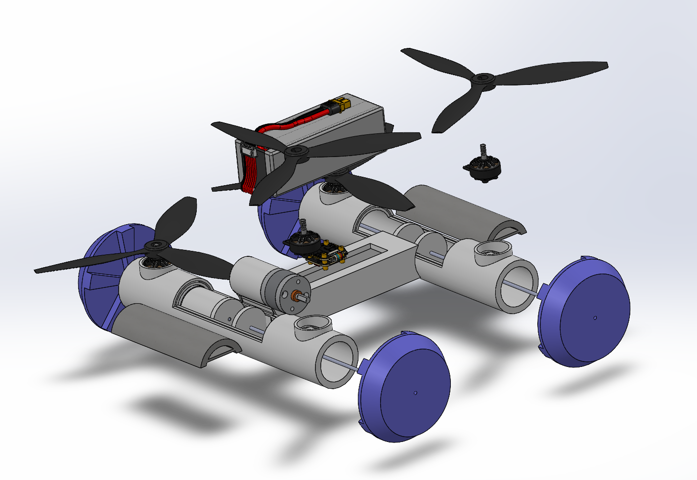
Manpower tool
Project management intern, Dynamic Systems, summer 2026
Months of payroll timesheets, split by trade, hour type and employee, had to be consolidated by hand across dozens of sheets. I built a VBA and Python script that reads every timesheet tab, identifies each trade by job code, consolidates hours across entries, filters out weeks under 12 hours, and outputs a Weekly Overview table plus a 9-chart dashboard.
A 60-minute manual task now takes seconds, giving managers faster insight for budgeting and staffing.
- Time
- 60 minutes to seconds
- Output
- Weekly Overview and a 9-chart dashboard
- Tools
- VBA, Python, Excel
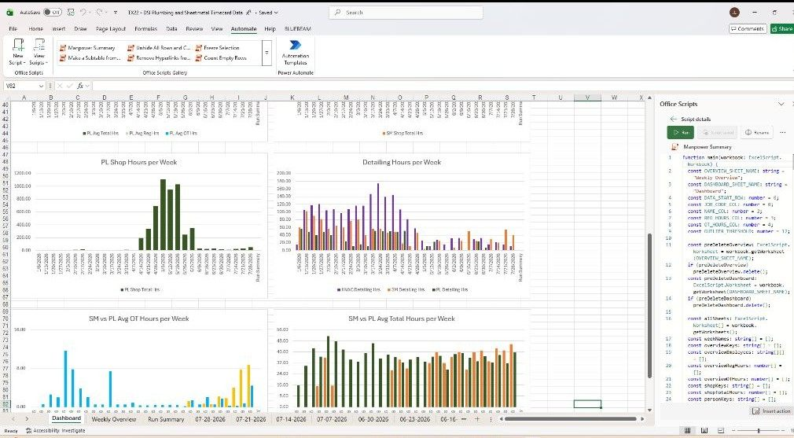
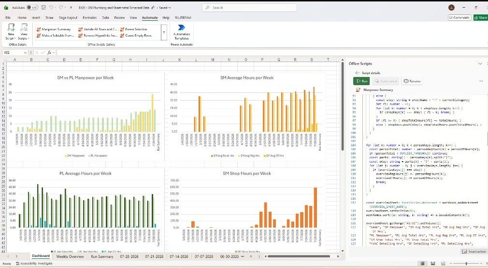
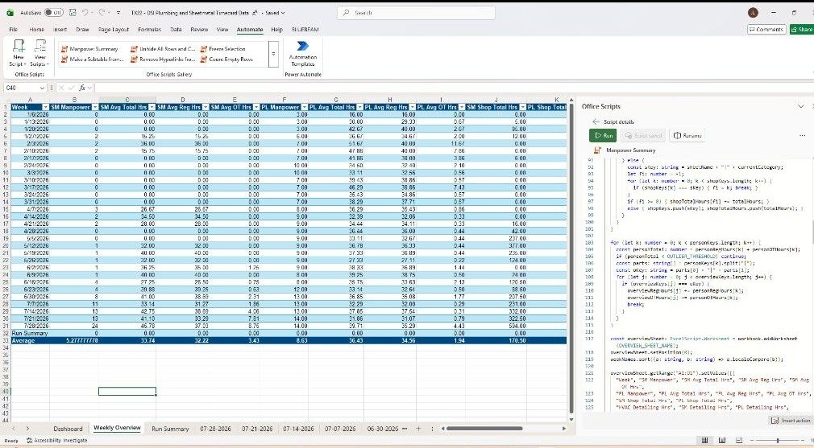
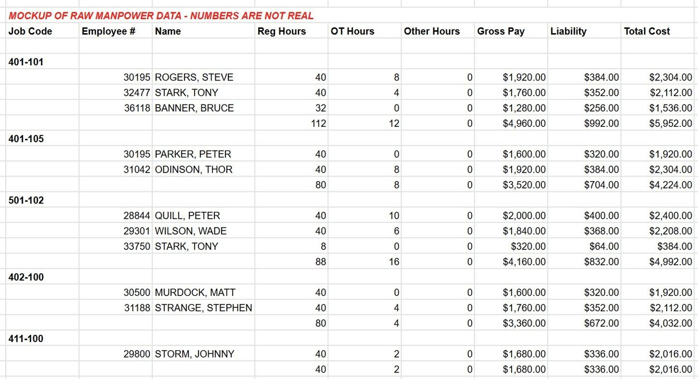
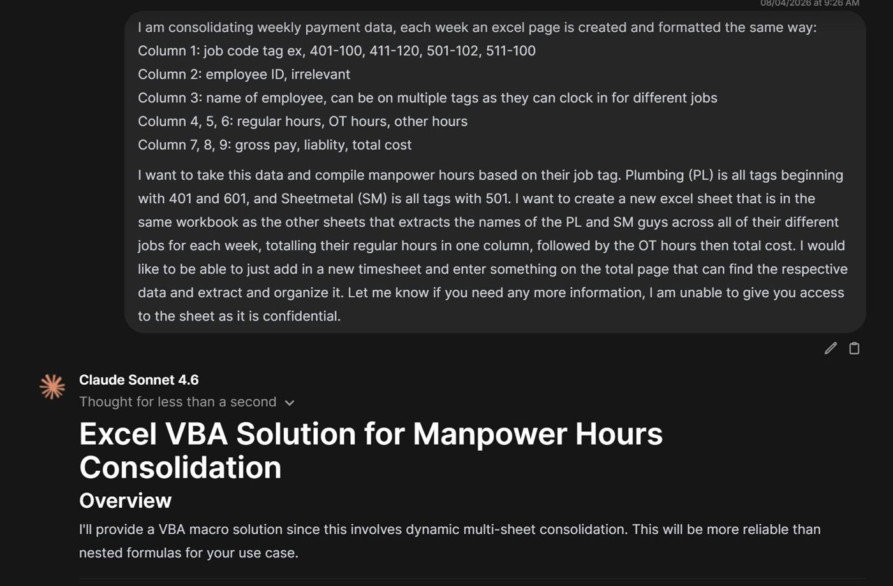
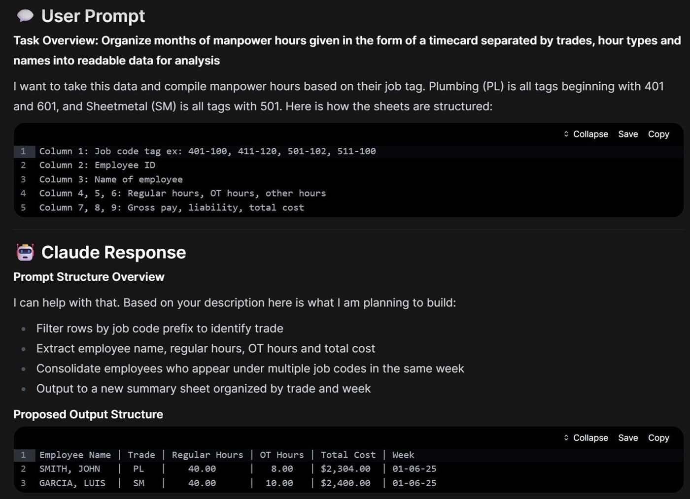
Weld QC and field work
Dynamic Systems, Inc., summer 2026
Time on live job sites alongside the office work: mechanical piping and sheet metal systems in progress, a weld QC tracking system mapping 275 individual welds by ID, and the Buda shop center.
- Welds tracked
- 275, mapped by ID
- Systems
- Chilled water, sanitary, pneumatic
- Drawings
- Read against ASME Y14
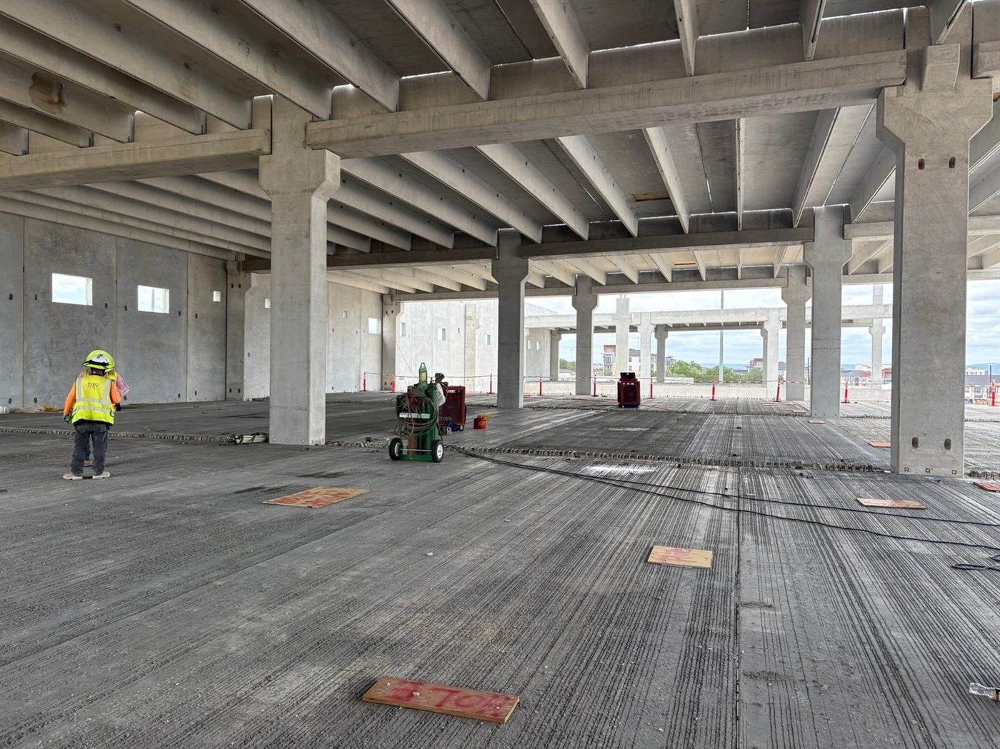
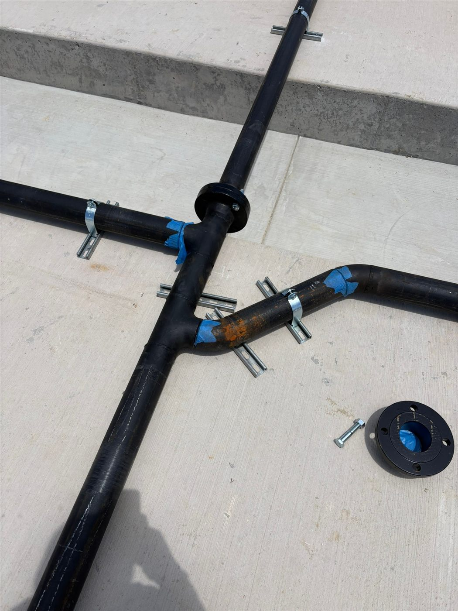
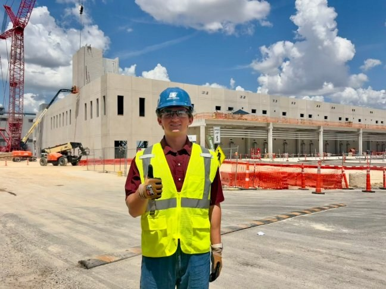
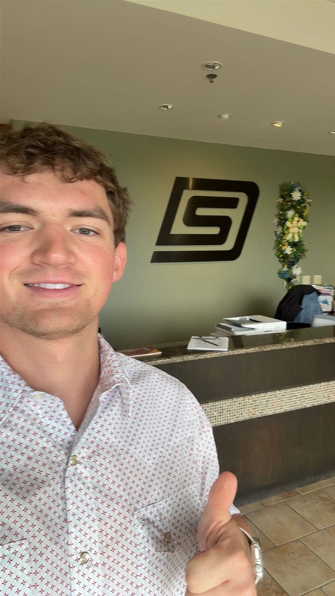
Kinetic toy
MEEN 210, Geometric Design and Modeling
A functional kinetic toy built around a gear-driven Chebyshev lambda linkage, designed with a team. First built in 2D: SolidWorks models and laser-cut acrylic pieces, pinned, glued and painted.
Then rebuilt in 3D with more than ten custom printed gears, applying a 0.15 mm tolerance offset across pin joints and gear profiles to allow for printer shrinkage and laser kerf, and proven over three design iterations before the class Toy Fair.
- Mechanism
- Chebyshev lambda linkage
- Tolerance
- 0.15 mm offset
- Iterations
- 3, with 10+ printed gears
- Tools
- SolidWorks, laser cutting, 3D printing, GD&T
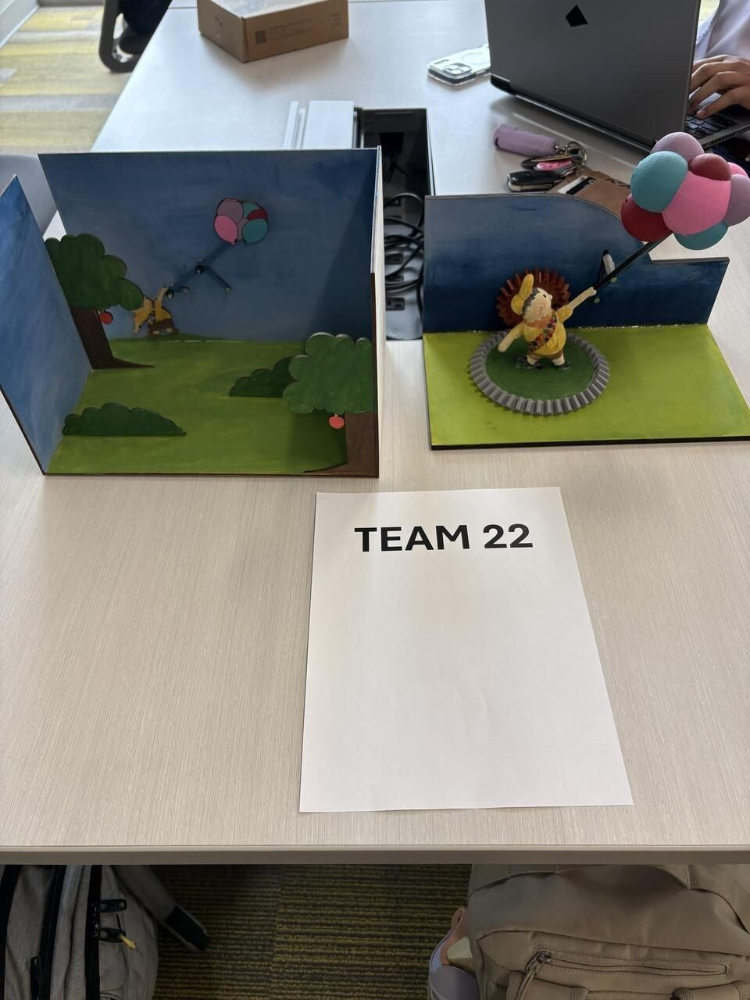
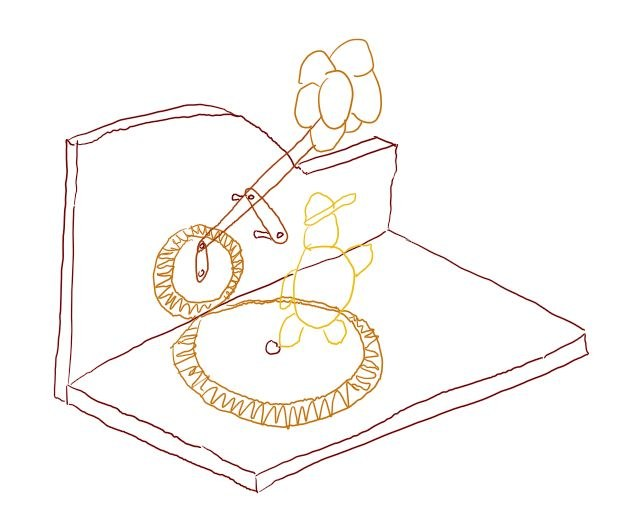
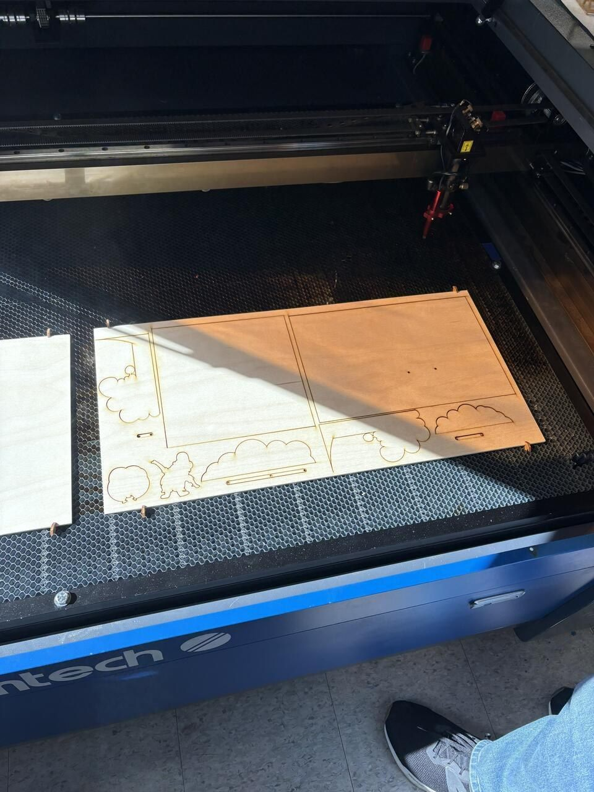
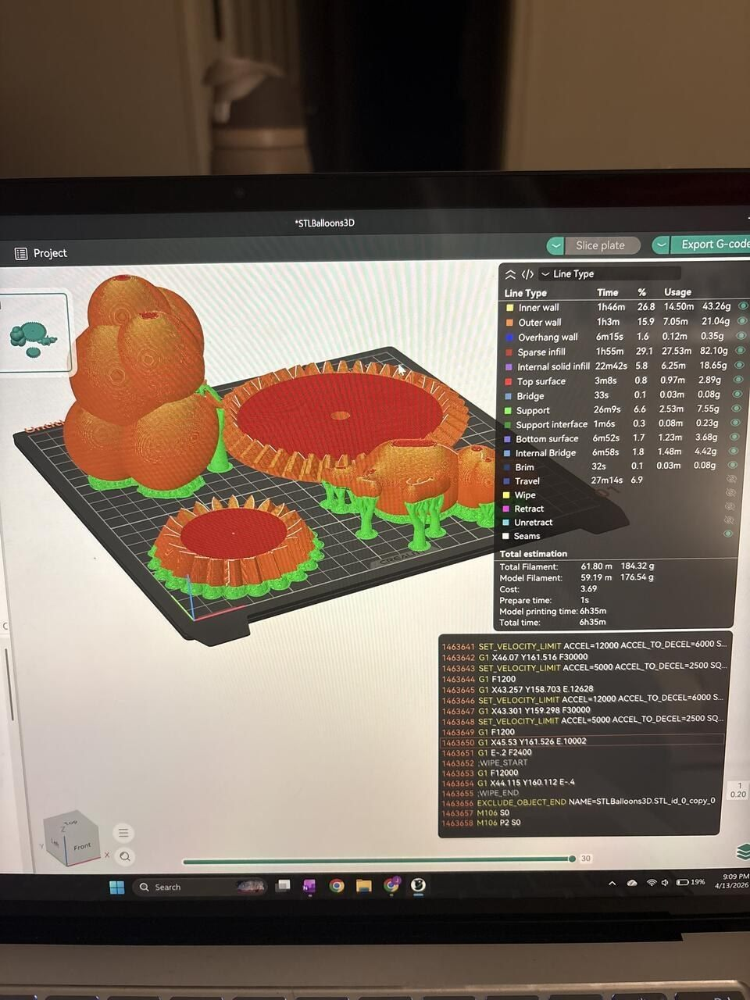